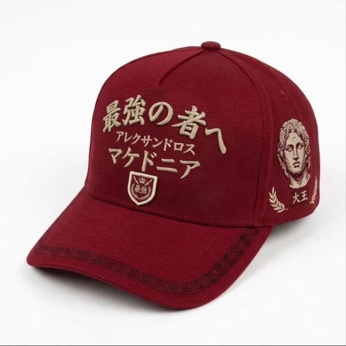
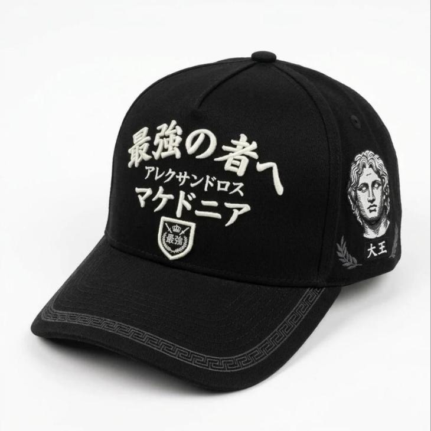

Una gorra de uso diario con tres figuras que no aceptaron lo imposible. Alejandro va al frente y en el costado izquierdo, Musashi en el derecho y la corona de Napoleón en la espalda. Toda la letra va en japonés. Viene en dos colores con el mismo diseño: rojo cardenal con hilo piedra, y total black con hilo blanco.
Estructura A-frame de copa alta, frente rígido sin costura
Dos colores: rojo cardenal y total black
益智X al frente, en el color de la otra gorra
Toda la letra en japonés: kanji y katakana con trazo de pincel
Talla ajustable de 56 a 60 cm

Rojo cardenal

Total black
Concepto
Tres figuras, una frase
Cada zona de la gorra corresponde a una figura. Toda la letra va en japonés, con el mismo trazo de pincel que los kanji de Musashi. Debajo de la visera está la frase que las une.
Frente
Alejandro Magno
最強の者へ
saikyō no mono e
«Al más fuerte»
Según Arriano, fue su respuesta en el lecho de muerte cuando le preguntaron a quién dejaba el imperio. Debajo dice アレクサンドロス (Alexandros) y マケドニア (Macedonia). Al pie va 益智X, chiquito, en el color de la otra gorra.
Costado izquierdo
Grecia · el busto
大王
daiō
«El Grande»
Es un busto griego de mármol de Alejandro, con el pelo que sube desde la frente como en sus retratos clásicos. El sello 大王 hace pareja con el 武蔵 del otro lado.
Costado derecho
Miyamoto Musashi
独行道
dokkōdō
«El camino de andar solo»
Son los preceptos que escribió en 1645, días antes de morir. El sello dice 武蔵, Musashi. Van con dos katanas, porque peleaba con dos espadas.
Espalda
La corona
我が辞書に不可能はない
waga jisho ni fukanō wa nai
«En mi diccionario no existe imposible»
Así se conoce en Japón la frase de Napoleón. Va sobre una corona real grande, con perlas y arcos, entre dos laureles.
為せば成る
«Si lo intentas, se logra». La frase es de Uesugi Yōzan, un señor feudal del siglo XVIII. Va estampada bajo la visera: solo la ve quien lleva la gorra.
Las dos gorras
Vista por vista
Una vitrina para cada color. Toca una miniatura para cambiar de vista y la foto grande para verla en pantalla completa. Las fotos son de Google Flow (Nano Banana 2.1); revisé cada carácter japonés en todas.
Color 1
Rojo cardenal
Sarga roja con todo el bordado en hilo piedra y los detalles tono sobre tono en vino.
Sarga rojo cardenalHilo piedraDetalles vino益智X en negroHebilla de latón
1 / 6
Frente
Toca la foto para verla en grande
Color 2
Total black
Todo negro, de la tela a la correa, con el bordado en blanco y las sombras en gris carbón.
Sarga negraHilo blancoDetalles gris carbón益智X en rojoHebilla negra mate
1 / 6
Frente
Toca la foto para verla en grande
Arte por zona
Planos para el taller de bordado
Cada plano muestra el panel extendido, antes de armar, sobre una cuadrícula de 10 mm. Las cotas están en milímetros. Los planos están en la versión roja; la total black usa el mismo arte, con hilo blanco donde va piedra y gris carbón donde va vino.
Zona 1 · Frente
Alejandro Magno
Medida
105 × 64 mm con 益智X, centrado en el panel
Ubicación
益智X va a 15 mm de la costura de la visera (ver zona 2)
Técnica
Kanji y kana en satén con trazo de pincel; en los trazos gruesos, relleno tatami
Hilo
Piedra en la roja · blanco en la total black. 益智X va en el color de la otra gorra.
Ojo
Revisar cada carácter en la prueba: 最 強 の 者 へ · ア レ ク サ ン ド ロ ス · マ ケ ド ニ ア. La línea en katakana mide 5 mm de alto: usar hilo fino (60 wt).
Zona 2 · Frente, al pie
益智X
Medida
8 mm de alto y unos 24 mm de ancho (el plano está a escala 2:1)
Ubicación
Centrado bajo マケドニア, a 15 mm de la costura de la visera. Reemplaza a la insignia de la v7.
Técnica
Bordado plano en satén, sin relleno de relieve. Es chico a propósito: es un detalle, no compite con la letra grande.
Color
Lleva el color de la otra gorra: negro (#111111) en la roja y rojo cardenal (#9B1B26) en la total black
Ojo
Tres caracteres: 益 智 y la X latina mayúscula
Zona 3 · Costado izquierdo
Grecia · el busto
Medida
El conjunto mide 92 × 80 mm; el busto solo, 55 × 62 mm
Ubicación
Centrado en el panel; el sello va a 16 mm de la costura inferior
Técnica
Estilo grabado: el contorno y el rayado del mármol en pespunte fino, y las sombras con tatami de baja densidad. Los laureles en plano. El sello 大王 relleno, con los kanji en reserva de hilo claro.
Arte
El recuadro punteado es la referencia sacada del mockup. Hay que vectorizarla a línea antes de digitalizar.
Ojo
El sello dice 大王 («el Grande»), en horizontal
Zona 4 · Costado derecho
Miyamoto Musashi
Medida
105 × 66 mm, el mismo peso visual que el busto
Ubicación
Centrado en el panel; el sello va a 24 mm de la costura inferior
Técnica
El ensō en satén ancho, con trazo de pincel. Las katanas en contorno, con tsuba y mango encordado. Los kanji en satén. El sello relleno, con 武蔵 en reserva (se ve la tela).
Hilo
Roja: piedra y vino · total black: blanco y gris carbón
Ojo
Los kanji se leen de arriba abajo: 独, 行, 道. Si el taller no tiene la fuente, mandar este trazo como vector.
Zona 5 · Espalda
La corona
Medida
La corona mide 60 mm de ancho; la frase va en un arco de 108 mm y cada laurel mide 46 mm
Ubicación
Centrado sobre la costura trasera; la base de la corona va a 8 mm de la abertura
Técnica
La corona en bordado plano: banda con dos filas de perlas, cinco joyas, puntas con perlas en satén circular, arcos con perlas y orbe. El terciopelo interior en tatami. La frase en satén con trazo de pincel.
Letra
6 mm de alto, 11 caracteres: 我 が 辞 書 に 不 可 能 は な い
Cierre
Correa de la misma tela. Hebilla deslizante grabada con una corona: latón envejecido en la roja, metal negro mate en la total black.
Zona 6 · Visera
Greca griega
Medida
Banda de 4 mm a lo largo de todo el borde exterior
Ubicación
A 2 mm del canto, por fuera de los 8 pespuntes
Técnica
Pespunte triple (bean stitch), tono sobre tono: vino en la roja, gris carbón en la total black
Pespuntes
8 filas tono sobre tono
Zona 7 · Bajo visera
La frase que las une
Medida
70 × 45 mm, centrado
Técnica
Serigrafía a una tinta, antes de armar la visera
Colores
Roja: tela gris con tinta piedra (en el mockup salió gris oscuro, que también funciona). Total black: tela negra con tinta blanca.
Cubre las costuras internas. Lleva los tres nombres en bucle: Alejandro, Musashi y Napoleón.
Colores
Piedra sobre rojo en la roja; blanco sobre negro en la total black
Construcción
Materiales y armado
Modelo
A-frame de copa alta, 5 paneles: frente alto y rígido con entretela (buckram), sin costura central, que sube recto desde la visera. Dos paneles laterales y dos traseros.
Colores
Rojo cardenal, con hilo piedra y detalles en vino. Total black, con hilo blanco y detalles en gris carbón. El diseño es el mismo en los dos.
Tela
Sarga de algodón 100 %
Visera
Precurvada, con 8 pespuntes tono sobre tono y la greca. Bajo visera: gris en la roja, negro en la total black.
益智X
Bordado plano de 8 mm al pie del frente (zona 2): negro en la roja, rojo cardenal en la total black
Ojales
4, bordados tono sobre tono (2 laterales y 2 traseros)
Botón
Forrado en la misma tela
Banda interior
Algodón, para el sudor
Cierre
Correa de la misma tela. Hebilla deslizante grabada con una corona: latón envejecido en la roja, negro mate en la total black.
Talla
Ajustable, de 56 a 60 cm de contorno
Orden de armado
Bordar y estampar los paneles y el bajo visera planos. Después armar la corona, coser la visera y poner la cinta y la banda.
Paleta
Dos colores, el mismo diseño
Los códigos son de pantalla. Para producir, pedir al taller su carta de hilos y elegir el tono más cercano con la tela delante.
Rojo cardenal
Rojo cardenal#9B1B26Tela
Piedra#D6CBB0Hilo principal y tintas
Vino#6E0F18Sombras, sellos y greca
Gris#8A8A85Bajo visera
Latón envejecido#9A7B4FHebilla
Negro#111111益智X
Total black
Negro#111111Tela, visera, bajo visera y correa
Blanco#F5F5F2Hilo principal y tintas
Gris carbón#3A3A3ASombras, sellos y greca
Negro mate#2B2B2BHebilla
Rojo cardenal#9B1B26益智X
Prompt
Prompt maestro para generar la gorra
Funciona en Google Flow y en otros generadores de imágenes. Para que salga la misma forma, adjunta como referencia la foto del frente. Para la total black conviene adjuntar la foto roja y pedir solo un cambio de colores: así la letra japonesa no se traduce ni se deforma.
Inglés · rojo cardenal
A structured A-frame high-crown 5-panel cap in deep cardinal red (#9B1B26) cotton twill: tall, firm, seamless front panel (stiff buckram) rising steeply from a pre-curved brim with 8 rows of tonal stitching, embroidered eyelets, covered top button, grey underside of the brim.
Palette: matte stone thread (#D6CBB0) as the main color, dark wine thread (#6E0F18) for shading and subtle patterns; no metallic, no other colors. All lettering in Japanese, bold brush-calligraphy embroidery.
FRONT: big arched line 最強の者へ in stone; under it a smaller katakana line アレクサンドロス; under it a straight line マケドニア; under that, small and centered, the text 益智X embroidered in black thread (#111111), flat satin, about 8 mm tall.
LEFT SIDE PANEL: a large, detailed classical Greek marble bust of Alexander the Great in three-quarter view, idealized young face, thick wavy hair rising from the forehead (anastole), engraving-style embroidery with stone outlines and wine shading; below it two small laurel sprigs and a small square wine seal with 大王.
RIGHT SIDE PANEL: a large brush-stroke enso circle in wine thread, two crossed katanas in detailed stone line-art with round tsuba guards and wrapped handles, the kanji 独行道 written vertically in stone brush calligraphy, and a small square seal with 武蔵.
BACK: a large, well structured royal crown about 6 cm wide in stone with wine shading (jeweled headband with a row of pearls, five points topped with pearls, crossing arches with pearl beading, wine velvet cap inside, small orb on top), flanked by two laurel branches; above it the arched line 我が辞書に不可能はない. Red twill strap with an antique-brass slide buckle engraved with a small crown.
TOP OF THE BRIM: thin Greek key (meander) border along the edge in wine thread.
UNDER THE BRIM: grey fabric printed with a laurel wreath and, inside it, 為せば成る. Inner taping printed in stone: アレクサンドロス · 武蔵 · ナポレオン repeated.
Hyper-realistic e-commerce catalog photo, 1:1, white seamless background, soft diffused studio light, natural soft shadow. Write every Japanese character exactly as given, not mirrored. No Greek, Latin or French letters, no stickers, no watermark.
Inglés · total black (con la foto roja adjunta)
Recolor the attached photo, nothing else. Pure color change of the same photo: same cap, same angle, same composition and EXACTLY the same Japanese characters in the same places. Do not translate, do not rewrite, no Latin letters. New colors: the whole cap jet black (#111111), including brim, underside of the brim, button and strap; every letter, line art and print in bright white (#F5F5F2); shading, seals, the enso and the Greek key border in charcoal grey (#3A3A3A); the buckle in matte black metal. The small text 益智X under マケドニア goes in deep cardinal red (#9B1B26). White seamless background, 1:1.
Etiqueta colgante
Texto para la etiqueta
KRATISTOS
最強の者へ
Tres figuras que no aceptaron un no por respuesta. Alejandro dejó su imperio al más fuerte. Musashi escribió el camino de andar solo. Napoleón dijo que en su diccionario no existía la palabra imposible.
Debajo de la visera va lo que las une: 為せば成る, si lo intentas, se logra.
Sarga de algodón 100 % · Bordada · Talla 56–60 cm Rojo cardenal · Total black Lavar a mano en frío · No usar secadora
La etiqueta repite los colores de cada gorra. En la roja va con fondo rojo cardenal e impresión en piedra; en la total black, con fondo negro e impresión en blanco.
El texto sigue el recorrido de la gorra: frente y costados, espalda y, al final, lo que solo ve quien la lleva puesta.